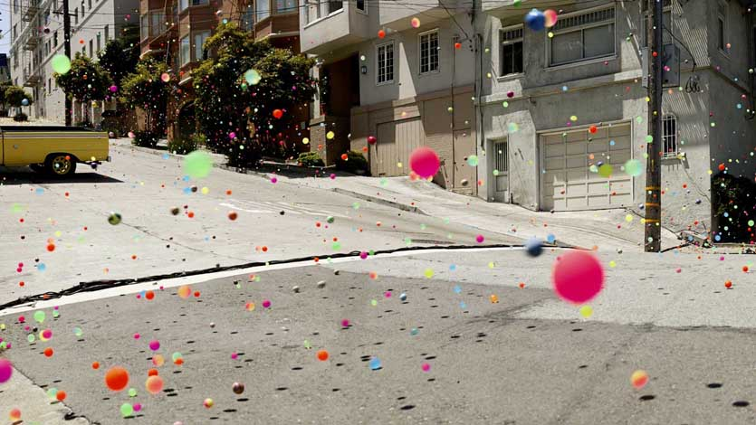

As menttioned in my Documentation, I reaaaaaally wanted to do an Animation and I was hoping that I could figure out how to batch export/import OBJ files from Maya to my Raytracer.
Here were my goals that I managed to meet:
- Animate a bouncing ball in Maya, using spline tools to use some of John Lasseter's principles of Animation: squash and stretch, slow-in, slow-out, etc.
- Get a chance for some creativity and an interesting use of my Raytracer
- Write a MEL script to export each item to a separate OBJ file, one per frame of the Animation (in total 380 frames)
- Write a Python script to create 380 LUA files with different OBJ inputs and different PNG outputs, to render each frame with my Raytracer.
- Write a Python script to call a list of LUA files for rendering, with a start frame and an end frame input.
- Compile the images together into a movie file, compressed with an AVI format (eg. DivX), using VirtualDub in Windows.
- Make a Soundtrack for the Animation with sound effects and music, with Sonic Foundry ACID in Windows.
- Attach the soundtrack to the movie and voila! My own animation rendered in my very own Raytracer!!
I can excitedly say that I managed to complete all of these goals I set for myself. I also made some fade in and fade outs for the movie, and credits!

The credits

Frame #1: Anticipation

Frame #113: Arcs
(Animation of Ball)

Frame #145: Slow In and Slow Out
(Ball slows before it hits the table)

Frame #149: Squash and Stretch
(Ball squashes and stretches as it hits the table and rebounds)

Frame #164: Anticipation
(Teapot stops hovering while ball bounces near it to look at it)

Frame #216: Appeal, Squash and Stretch
(Ball bounces
as it hits the teapot on the head)

Frame #259: Exaggeration, Timing, Squash and Stretch
(Ball bounces harder on the last bounce before the teapot falls)

Frame #262: Exaggeration
(Ball flies away quickly on the last hit to imply that it hit the teapot much harder on the last hit)

Frame #273: Secondary Action
(Teapot falls as a result of the ball hitting it on the head 3 times)

Frame #284: Appeal and Exaggeration
(The teapot is made of glass, so naturally it should shatter into pieces!)

Frame #291: Staging
(The teapot is the key interest for the viewer now, so the ball is now off screen)

Frame #360: Appeal
(The teapot pieces collide with the table, bounce and some of them roll off the table)
Now it's time to watch my Animation!!
I added the soundtrack using Sonic Foundry ACID, using the song called "Heartbeats" by Jose Gonzalez. The inspiration for using this song is from the Sony Bravia advert where 250,000 balls were poured down the streets of San Francisco to create an advertisement for Sony Bravia TV sets. (See the page here: http://www.bravia-advert.com/balls/)

Sony Bravia Bouncing Balls Ad
My animation is available here: MikeJutan_cs488MovieFinalWithMusic.avi
|